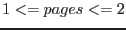

| Parameter | Mand | Type | Default | Constraints |
| set | yes | string | none | |
|
Name of pipeline-prepared OM tracking history data auxiliary file for the exposure
| ||||
| plotfile | no | string | pgplot.ps | |
|
name of output postscript file (PPS product OM postscript tracking
history plot)
| ||||
| trackradius | no | real | 0.5 | |
|
nominal radius of pointing accuracy (arcsecs)
| ||||
| hardcopy | no | boolean | T | |
|
produce a hardcopy?
| ||||
| pages | no | integer | 1 2 |  |
|
List of pages to plot
| ||||
| Parameter | Mand | Type | Default | Constraints |